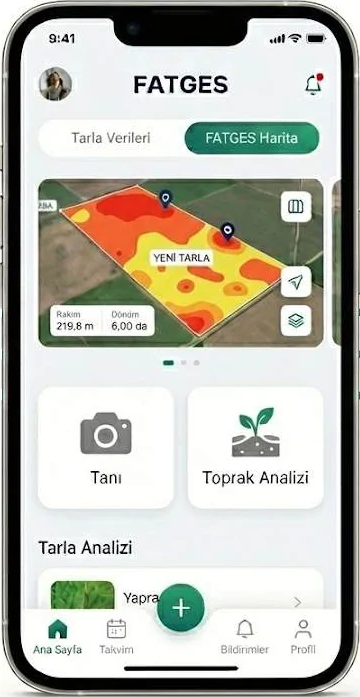
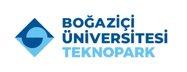

Batman Boğaziçi Teknopark Girişim Ofisi girişimiTescilli bir ERDAI girişimidir
Fıstık
tarımında
dijital
dönüşüm.
Antep ve Siirt fıstığına özel eğitilmiş yapay zeka; hastalığı anında teşhis eder, toprak analizini saniyeler içinde reçeteye dönüştürür, tarlanızı 7/24 gözetler. FATGES, çiftçinin cebindeki dijital ziraat mühendisidir.
Görünmez Bariyer
Milyonlarca liralık potansiyeli engelleyen sessiz kayıp
Güneydoğu'nun yükselen değeri fıstıkta üretim rekor kırıyor. Ancak kulaktan dolma bilgiyle yapılan tarım, yanlış teşhis ve korumasız tarlalar her yıl emeğin büyük bölümünü toprağa gömüyor.
rekolte kaybı
Kulaktan Dolma Tarım
Komşu tarlanın uygulaması kopyalanıyor; yanlış ilaç ve gübre toprağı yoruyor, verimi düşürüyor.
Yanlış Teşhis
Karazenk, Dal Güvesi ve İç Kurdu çıplak gözle karışıyor; yanlış mücadele hem ürünü hem parayı tüketiyor.
Korumasız 127.000 Dekar
Profesyonel entegre mücadele sadece 2.000 dekarda yapılıyor. Geriye kalan alan kaderine terk edilmiş durumda.
Hasatta Güvenlik Açığı
Hasat döneminde artan hırsızlık olayları bir yılın emeğini tek gecede yok edebiliyor.
Çözümümüz
Çiftçinin cebindeki
dijital ziraat mühendisi
Yüksek teknoloji, basit arayüz. FATGES akademik bilgiyi çiftçinin cebine, en sade haliyle taşır.
FATGES : Fıstık ve Tarımsal Gelişim Entegre Sistemleri
Yapay Zeka ile Hastalık Teşhisi
Yaprağın fotoğrafını çekin. Antep ve Siirt fıstığına özel eğitilmiş görüntü işleme modelimiz hastalığı anında ve doğru tespit etsin.
Akıllı Gübreleme Reçeteleri
Karmaşık toprak analiz raporları saniyeler içinde sadeleşsin; tarlanıza özel, bilimsel ilaçlama ve gübreleme planına dönüşsün.
7/24 İzleme ve Güvenlik
Uydu görüntüleriyle gelişim takibi, opsiyonel akıllı kameralarla hasat döneminde tam koruma. Tarlanız her an gözetim altında.
Nasıl Çalışır
3 basit adımda tarlanızın kontrolü elinizde
Şüpheli yaprağı veya raporu tarayın
Telefonunuzun kamerasıyla şüpheli yaprağın fotoğrafını çekin ya da toprak analiz raporunuzu uygulamaya okutun. Ekstra donanım, sensör veya yatırım gerekmez.
Sadece cep telefonu yeterliYapay zeka saniyeler içinde analiz etsin
Sistemimiz Antep ve Siirt fıstığına özel eğitilmiş algoritmalarla görüntüyü işler; hastalığı, zararlıyı veya besin eksikliğini bölge toprağı ve iklimine göre yorumlar.
Bölgeye özel eğitilmiş modelSize özel reçeteyi anında uygulayın
Anlaşılır ilaçlama ve gübreleme planınız hazır. Hangi ürünü, ne zaman, ne kadar kullanacağınızı adım adım görün; verimi artırın, maliyeti düşürün.
Anlaşılır ve bilimsel planUygulama
Tarlanız artık cebinizde

Pazar Potansiyeli
Milyar dolarlık havzada doğru yerdeyiz
Batman, Türkiye fıstık üretiminde 5. sıraya yükseldi. Dağıtılan 1,9 milyon yeni fidan, pazarın önümüzdeki 5 yılda katlanacağının somut kanıtı.
B2C Bireysel Abonelik
Demo kullanım ile başlayan, premium analiz ve uzman görüşü içeren abonelik paketleri.
B2B Kurumsal Veri
Anonimleştirilmiş bölgesel rekolte ve hastalık haritaları ile tahmin raporlarının sektöre satışı.
Donanım Satışı
Hırsızlığı önleyen akıllı güvenlik sistemleri ve kurulum hizmetleri. Tamamen opsiyonel.
Rekabet Analizi
Devler genele bakıyor, biz fıstığa odaklanıyoruz
Mevcut çözümler genel tarıma ve büyük kurumsal çiftliklere odaklanıyor. FATGES, bölge toprağı ve iklimi özelinde eğitilmiş niş yapay zekasıyla %98'lik korumasız kesime ulaşıyor.
| Değerlendirme Kriteri | FATGES | Doktar | Plantix | Agrovisio | FieldView |
|---|---|---|---|---|---|
| Antep ve Siirt fıstığına özel yapay zeka | |||||
| Sıfır donanım yatırımı (sadece telefon) | |||||
| Görüntü işleme ile anlık hastalık tespiti | |||||
| Uydu destekli gelişim takibi | |||||
| Bölgesel ve yerel reçete önerisi | |||||
| Çiftçi dostu basit arayüz (mobil öncelikli) |
Karşılaştırma; Doktar (Türkiye), Plantix (Global), Agrovisio (Türkiye) ve Climate FieldView (Bayer, Global) ürünlerinin halka açık özellik setlerine dayanır.
Doğrulama ve Bilimsel Altyapı
Tahmin değil, bilim konuşur
Modelimiz akademik veri, resmi bölgesel kaynaklar ve saha geri bildirimiyle beslenir; her reçete bölgesel ve akademik doğrulamadan geçer.
Veri Toplama
Akademik veri, resmi ve bölgesel kaynaklar, saha tecrübesi ve geri bildirim.
Model Eğitimi
Antep ve Siirt fıstığına özel görüntü işleme ve öneri modelleri.
Akademik Doğrulama
Bölgesel ve akademik onay süreci; ziraat uzmanı kontrolü.
Bilimsel Reçete
Çiftçiye sade dille, uygulanabilir ve güvenilir plan.
Akademik ve Ar-Ge Partnerleri
Kamu ve Sektörel Erişim
Hedeflenen B2B Veri Müşterileri
Kuluçka ve girişim merkezimiz

Yol Haritası
Tohumdan markaya giden yol
Hazırlık ve Saha Doğrulama
Veri setinin akademik onaydan geçmesi, bölge çiftçileriyle saha gözlemleri ve teknoloji hazırlık seviyesinin yükseltilmesi.
Şirketleşme ve MVP
Batman Boğaziçi Teknopark bünyesinde şirketleşme ve uygulamanın ilk sürümünün tamamlanması.
Pazara Giriş ve Pilot Testler
Batman'da pilot çiftçilerle saha testleri, uygulamanın marketlere çıkışı ve 1.500 aktif üreticiye doğrudan pazarlama.
Ölçeklenme ve Ar-Ge Destekleri
TÜBİTAK ve DİKA destekleriyle büyüme; Siirt, Şanlıurfa ve Diyarbakır başta olmak üzere Güneydoğu Anadolu'ya açılım.
Proje Ekibi
Yazılımın ve toprağın uzmanları
Teknolojiyi geliştiren mühendislik ile sahayı tanıyan ziraat bilgisi aynı masada.
Fatih Türker
Proje Yürütücüsü | Yazılım Mühendisi
Sümeyra Rüzgar
Ziraat Mühendisi | Saha Mühendisi
Prof. Dr. Mesut Budak
Akademik Danışman | Siirt Üniversitesi
Toprak Bilimi ve Bitki Besleme Bölümü profesörü. Siirt fıstığı toprak verimliliği ve makine öğrenimi ile toprak analizi konularında ulusal ve uluslararası projelere liderlik eden akademik otorite.
Destek Ekibi
Gelecek Vizyonumuz: Güneydoğu'da her fıstık ağacını akıllandırmak
Gelenekten geleceğe,
tarladan veriye.
Bilinçlendirdiğimiz her çiftçi ve kurtardığımız her ağaç; sürdürülebilir çevreye, bölge ekonomisine ve çiftçinin refahına hizmet eder.
İletişim
Birlikte büyütelim
Yatırım, iş birliği veya pilot uygulama için bize bir mesaj uzaklıktasınız.